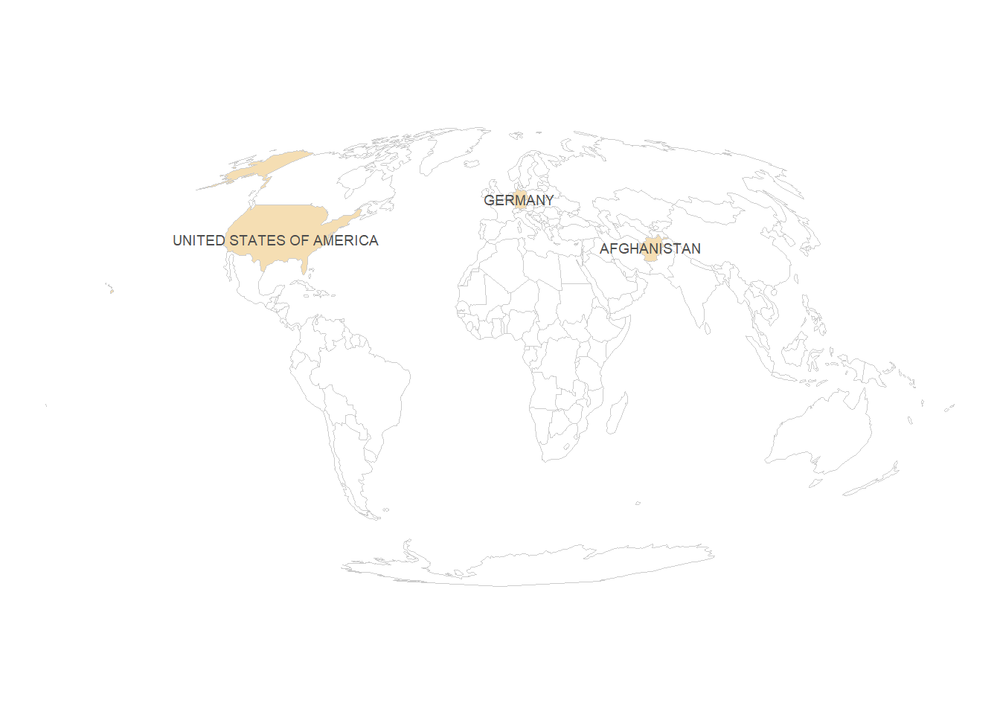

library(sf)
library(dplyr)
library(ggplot2)
library(countrycode)
library(rnaturalearth)
library(ggspatial)In this post, I create a basic world map – specifically, a Choropleth map. That means we colour the countries by a specific variable.
Preparation
First, I load all necessary libraries.
Then, I declare some countries. I standardize their names with the package countrycode, so that we get these countries’ ISO3-codes.
my_countries <- c("Afghanistan",
"Federal Republic of Germany",
"USA")
my_countries_clean <- countrycode(my_countries,
origin = "country.name",
destination = "iso3c")I then load the data for the map. It’s saved in a format called sf, which stands for spatial feature. We can treat it just like any other data frame, but each row has a column called “geometry”, from which the coordinates of the row can be plotted – in this case, a country’s outline.
Then, we create a new variable: we check for each observation if it’s part of our my_countries_clean vector.
world <- ne_countries(returnclass = "sf") |> # load world
# check for each country: is it in my_countries_clean?
mutate(is_my_country = iso_a3 %in% my_countries_clean)
Tip
If we start off from a data frame instead of a vector, we would merge the two data frames. Then, we don’t just end up with a Boolean variable, but with all of the variables of the joint data frame.
Plotting
Now, we’re ready to plot our map!
Basic map
We can simply do this with ggplot, with the function geom_sf. It takes normal aesthetics, so we can just hand it our variable of interest – is_my_country. Since this is a map, it makes the most sense to just fill the polygons according to this variable, so we use the fill aesthetic.
ggplot() +
# plot an sf object
geom_sf(data = world,
# fill it according to my variable
aes(fill = is_my_country))
Intermediate map
We now decrease some of the clutter. We get rid of the legend since it’s just a Boolean – we can indicate this in our title/caption. We also choose different colours, and get rid of the gridlines.
ggplot() +
# plot an sf object
geom_sf(data = world,
# fill it according to my variable
aes(fill = is_my_country),
# don't show the legend: it's just true or false, can be shown in title
show.legend = FALSE) +
# make colours prettier
scale_fill_manual(values = c("white", "wheat")) +
# remove clutter
theme_void() 
Prettier map
It doesn’t quite look like we’re used to, though. Check out the comments to see what we’ve changed.
ggplot() +
# plot an sf object
geom_sf(
data = world,
# fill it according to my variable
aes(fill = is_my_country),
# make borders lighter
col = "grey80",
# don't show the legend: it's just true or false, can be shown in title
show.legend = FALSE
) +
# add country labels
geom_sf_text(
# get the data just for the countries we want to show
data = world |> filter(is_my_country == TRUE),
# get the sovereignt label, and transform it to upper case
aes(label = admin |> toupper()),
# make it not as dark
col = "grey30",
# decrease size
size = 2.5
) +
# make colours prettier
scale_fill_manual(values = c("white", "wheat")) +
# change to a nicer projection: equal area (more accurate)
coord_sf(crs = "ESRI:54009") +
# remove clutter
theme_void() +
# add blue background for water
theme(panel.background = element_rect(fill = alpha("cornflowerblue", .4),
colour = NA)) 
Advanced stuff
If you’re really interested, you can check out the following on top:
- graticules (latitude/longitude)
- North arrow (not recommended for world maps, though)
- scale (not recommended for most world maps, though)
Citation
BibTeX citation:
@online{zeller2023,
author = {Zeller, Sarah},
title = {Creating a Map with `Ggplot2`},
date = {2023-11-28},
url = {https://sarahzeller.github.io/blog/posts/creating-a-basic-map/},
langid = {en}
}
For attribution, please cite this work as:
Zeller, Sarah. 2023. “Creating a Map with `Ggplot2`.”
November 28, 2023. https://sarahzeller.github.io/blog/posts/creating-a-basic-map/.